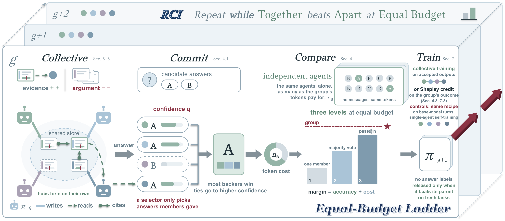

1Credit a group at equal cost
Multi-agent systems are commonly credited for outperforming a single agent. Part of that improvement, however, comes from extra computation rather than collaboration. Majority voting over independent samples already improves on a single agent, and the more samples are drawn, the more likely at least one of them is right. A fair test therefore compares a group with independent copies of the same model that spend the same tokens.
If a group run spends k completion tokens and one independent agent costs c1, the group's budget is nB = k/c1 agents. Against nB independent agents, the ladder has three levels:
Level 3 is a test of interaction. Voting, confidence weighting, verifiers and judges all select among independent answers, so none of them can exceed pass@n at equal cost. A group above pass@n must have produced correct answers through what its members exchanged.

